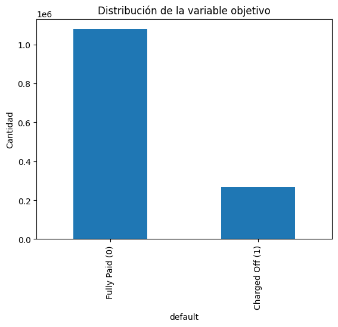

2. Dataset#
2.1 Descripción general del dataset#
En esta sección se realiza la carga del dataset original de Lending Club y se inspecciona su estructura general: dimensiones, columnas y primeras observaciones.
import pandas as pd
df = pd.read_csv("../data/accepted_2007_to_2018Q4.csv", low_memory=False)
print(df.shape)
df.head()
---------------------------------------------------------------------------
FileNotFoundError Traceback (most recent call last)
Cell In[1], line 3
1 import pandas as pd
----> 3 df = pd.read_csv("../data/accepted_2007_to_2018Q4.csv", low_memory=False)
5 print(df.shape)
6 df.head()
File ~\miniconda3\envs\jb_lending\Lib\site-packages\pandas\io\parsers\readers.py:873, in read_csv(filepath_or_buffer, sep, delimiter, header, names, index_col, usecols, dtype, engine, converters, true_values, false_values, skipinitialspace, skiprows, skipfooter, nrows, na_values, keep_default_na, na_filter, skip_blank_lines, parse_dates, date_format, dayfirst, cache_dates, iterator, chunksize, compression, thousands, decimal, lineterminator, quotechar, quoting, doublequote, escapechar, comment, encoding, encoding_errors, dialect, on_bad_lines, low_memory, memory_map, float_precision, storage_options, dtype_backend)
861 kwds_defaults = _refine_defaults_read(
862 dialect,
863 delimiter,
(...) 869 dtype_backend=dtype_backend,
870 )
871 kwds.update(kwds_defaults)
--> 873 return _read(filepath_or_buffer, kwds)
File ~\miniconda3\envs\jb_lending\Lib\site-packages\pandas\io\parsers\readers.py:300, in _read(filepath_or_buffer, kwds)
297 _validate_names(kwds.get("names", None))
299 # Create the parser.
--> 300 parser = TextFileReader(filepath_or_buffer, **kwds)
302 if chunksize or iterator:
303 return parser
File ~\miniconda3\envs\jb_lending\Lib\site-packages\pandas\io\parsers\readers.py:1645, in TextFileReader.__init__(self, f, engine, **kwds)
1642 self.options["has_index_names"] = kwds["has_index_names"]
1644 self.handles: IOHandles | None = None
-> 1645 self._engine = self._make_engine(f, self.engine)
File ~\miniconda3\envs\jb_lending\Lib\site-packages\pandas\io\parsers\readers.py:1904, in TextFileReader._make_engine(self, f, engine)
1902 if "b" not in mode:
1903 mode += "b"
-> 1904 self.handles = get_handle(
1905 f,
1906 mode,
1907 encoding=self.options.get("encoding", None),
1908 compression=self.options.get("compression", None),
1909 memory_map=self.options.get("memory_map", False),
1910 is_text=is_text,
1911 errors=self.options.get("encoding_errors", "strict"),
1912 storage_options=self.options.get("storage_options", None),
1913 )
1914 assert self.handles is not None
1915 f = self.handles.handle
File ~\miniconda3\envs\jb_lending\Lib\site-packages\pandas\io\common.py:926, in get_handle(path_or_buf, mode, encoding, compression, memory_map, is_text, errors, storage_options)
921 elif isinstance(handle, str):
922 # Check whether the filename is to be opened in binary mode.
923 # Binary mode does not support 'encoding' and 'newline'.
924 if ioargs.encoding and "b" not in ioargs.mode:
925 # Encoding
--> 926 handle = open(
927 handle,
928 ioargs.mode,
929 encoding=ioargs.encoding,
930 errors=errors,
931 newline="",
932 )
933 else:
934 # Binary mode
935 handle = open(handle, ioargs.mode)
FileNotFoundError: [Errno 2] No such file or directory: '../data/accepted_2007_to_2018Q4.csv'
El dataset utilizado corresponde a préstamos otorgados por Lending Club entre 2007 y 2018 (Q4). Tras la carga inicial, el dataset cuenta con 2,260,701 registros y 151 columnas, lo que lo convierte en un conjunto de datos de gran volumen que abarca variables financieras, demográficas y de comportamiento de pago de los solicitantes.
Entre las columnas visibles se observan variables como el monto del préstamo (loan_amnt),
la tasa de interés (int_rate), el plazo (term), la calificación crediticia (grade, sub_grade)
y la cuota mensual (installment), entre otras. Se aprecia también la presencia de valores
nulos en varias columnas, lo que anticipa la necesidad de un proceso de limpieza y preprocesamiento.
2.2 Definición de la variable objetivo#
El objetivo del proyecto es predecir el incumplimiento (default) de un préstamo. Para ello, se filtran únicamente los estados relevantes:
Fully Paid → 0
Charged Off → 1
# Ver estados originales
df["loan_status"].value_counts()
loan_status
Fully Paid 1076751
Current 878317
Charged Off 268559
Late (31-120 days) 21467
In Grace Period 8436
Late (16-30 days) 4349
Does not meet the credit policy. Status:Fully Paid 1988
Does not meet the credit policy. Status:Charged Off 761
Default 40
Name: count, dtype: int64
La variable objetivo loan_status presenta 9 categorías en el dataset original. Para este
proyecto, se conservan únicamente los registros con estado “Fully Paid” (1,076,751 casos)
y “Charged Off” (268,559 casos), que representan préstamos con resultado definitivo y claro.
Los demás estados — como Current, Late, In Grace Period o Default — se excluyen del análisis al tratarse de préstamos aún activos o en situación ambigua, lo que introduciría ruido en el modelo. Esto reduce el dataset a un problema de clasificación binaria:
0→ Fully Paid (préstamo pagado correctamente)1→ Charged Off (préstamo en incumplimiento)
# Filtrar solo clases binarias
df = df[df["loan_status"].isin(["Fully Paid", "Charged Off"])]
df["loan_status"].value_counts()
loan_status
Fully Paid 1076751
Charged Off 268559
Name: count, dtype: int64
Tras el filtrado, el dataset queda con 1,345,310 registros distribuidos en dos clases:
Fully Paid: 1,076,751 registros (≈ 80%)
Charged Off: 268,559 registros (≈ 20%)
Se evidencia un desbalance de clases significativo, con una proporción aproximada de 4:1, lo cual deberá ser considerado durante el entrenamiento y la evaluación del modelo.
# Crear variable binaria
df["default"] = df["loan_status"].apply(
lambda x: 1 if x == "Charged Off" else 0
)
df["default"].value_counts()
C:\Users\PC\AppData\Local\Temp\ipykernel_20712\2317330592.py:2: PerformanceWarning: DataFrame is highly fragmented. This is usually the result of calling `frame.insert` many times, which has poor performance. Consider joining all columns at once using pd.concat(axis=1) instead. To get a de-fragmented frame, use `newframe = frame.copy()`
df["default"] = df["loan_status"].apply(
default
0 1076751
1 268559
Name: count, dtype: int64
Se crea la variable objetivo binaria default a partir de loan_status, confirmando la
codificación:
0(No default): 1,076,751 registros1(Default): 268,559 registros
El dataset queda listo con la variable objetivo definida para el entrenamiento de los modelos.
2.3 Balance de clases#
Se analiza la proporción entre préstamos pagados y préstamos en default. Este paso es fundamental para evaluar si el dataset está desbalanceado.
df["default"].value_counts(normalize=True)
default
0 0.800374
1 0.199626
Name: proportion, dtype: float64
El análisis de proporciones confirma el desbalance de clases:
Clase 0 (No default): 80.04% de los registros
Clase 1 (Default): 19.96% de los registros
El dataset presenta un desbalance moderado-alto, con una relación aproximada de 4:1. Esto implica que un modelo naive que prediga siempre “no default” alcanzaría un 80% de accuracy, por lo que se deberán priorizar métricas como Recall, F1-score y ROC-AUC para evaluar correctamente el desempeño.
import matplotlib.pyplot as plt
df["default"].value_counts().plot(kind="bar")
plt.title("Distribución de la variable objetivo")
plt.xticks([0,1], ["Fully Paid (0)", "Charged Off (1)"])
plt.ylabel("Cantidad")
plt.show()

El gráfico de barras ilustra visualmente el desbalance entre clases. La barra de Fully Paid (0) supera el millón de registros, mientras que Charged Off (1) se sitúa alrededor de los 268,000, confirmando la proporción 4:1 identificada anteriormente. Este desbalance será un factor clave a considerar en la estrategia de modelado.
2.4 Tipos de variables#
Se identifican variables numéricas y categóricas para preparar el proceso de modelado.
df.dtypes.value_counts()
float64 113
str 38
int64 1
Name: count, dtype: int64
El dataset cuenta con 152 columnas distribuidas en tres tipos de datos:
float64: 113 columnas — variables numéricas continuas (montos, tasas, porcentajes, etc.)
str/object: 38 columnas — variables categóricas o de texto
int64: 1 columna — variable numérica entera
Esta composición indica que el preprocesamiento deberá incluir el tratamiento de variables categóricas (codificación) y la revisión de columnas numéricas con posibles valores nulos o atípicos.
numerical_cols = df.select_dtypes(include=["int64", "float64"]).columns
categorical_cols = df.select_dtypes(include=["object"]).columns
print("Variables numéricas:", len(numerical_cols))
print("Variables categóricas:", len(categorical_cols))
Variables numéricas: 114
Variables categóricas: 38
C:\Users\PC\AppData\Local\Temp\ipykernel_20712\101531032.py:2: Pandas4Warning: For backward compatibility, 'str' dtypes are included by select_dtypes when 'object' dtype is specified. This behavior is deprecated and will be removed in a future version. Explicitly pass 'str' to `include` to select them, or to `exclude` to remove them and silence this warning.
See https://pandas.pydata.org/docs/user_guide/migration-3-strings.html#string-migration-select-dtypes for details on how to write code that works with pandas 2 and 3.
categorical_cols = df.select_dtypes(include=["object"]).columns
Se identifican 114 variables numéricas (int64 y float64) y 38 variables categóricas (object), las cuales serán tratadas de forma diferenciada durante el preprocesamiento.
2.5 Análisis de valores nulos#
Se evalúa la cantidad de valores faltantes en cada variable. Esto permitirá definir estrategias de imputación o eliminación.
missing = df.isnull().sum().sort_values(ascending=False)
missing_percentage = (missing / len(df)) * 100
pd.DataFrame({
"Missing Values": missing,
"Percentage": missing_percentage
}).head(20)
| Missing Values | Percentage | |
|---|---|---|
| member_id | 1345310 | 100.000000 |
| next_pymnt_d | 1345310 | 100.000000 |
| orig_projected_additional_accrued_interest | 1341551 | 99.720585 |
| hardship_amount | 1339556 | 99.572292 |
| hardship_last_payment_amount | 1339556 | 99.572292 |
| hardship_length | 1339556 | 99.572292 |
| hardship_status | 1339556 | 99.572292 |
| hardship_reason | 1339556 | 99.572292 |
| deferral_term | 1339556 | 99.572292 |
| hardship_start_date | 1339556 | 99.572292 |
| hardship_end_date | 1339556 | 99.572292 |
| hardship_type | 1339556 | 99.572292 |
| hardship_loan_status | 1339556 | 99.572292 |
| hardship_payoff_balance_amount | 1339556 | 99.572292 |
| hardship_dpd | 1339556 | 99.572292 |
| payment_plan_start_date | 1339556 | 99.572292 |
| sec_app_mths_since_last_major_derog | 1338665 | 99.506062 |
| sec_app_revol_util | 1327008 | 98.639570 |
| revol_bal_joint | 1326681 | 98.615263 |
| sec_app_chargeoff_within_12_mths | 1326680 | 98.615189 |
El análisis de valores nulos revela que varias columnas presentan una cantidad crítica de datos faltantes. Las 20 variables con mayor porcentaje de nulos son en su mayoría relacionadas con programas de dificultad financiera (hardship) y solicitudes conjuntas (sec_app):
member_idynext_pymnt_d: 100% de valores nulos — serán eliminadas por no aportar información útil.Variables
hardship_*: Entre 99.57% y 100% de nulos — corresponden a casos excepcionales de reestructuración de deuda, con cobertura mínima en el dataset.Variables
sec_app_*yrevol_bal_joint: Alrededor del 98-99% de nulos — asociadas a solicitudes conjuntas, igualmente poco representadas.
Estas columnas con más del 95% de valores faltantes serán candidatas directas para eliminación en la etapa de preprocesamiento.
df.to_csv("../data/accepted_clean.csv", index=False)